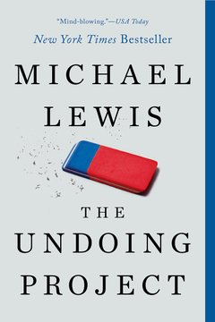
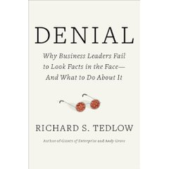

Módulo 03 / Apartado 1 de 5
Medir solo lo medible
El error más caro del pensamiento crítico tiene nombre desde 1971, cuatro escalones y una guerra perdida detrás.
Antes de nada: qué es pensar críticamente
La expresión está tan gastada que ya no significa nada. Se usa para decir «ser desconfiado», que no es lo mismo, y para decir «estar de acuerdo conmigo», que es lo contrario.
Un hecho se puede comprobar. «Las ventas cayeron un 12% el trimestre pasado.» Se mira y se sabe.
Una inferencia es una conclusión que sacas de un hecho. «Las ventas cayeron porque subimos el precio.» Puede estar bien o mal, y se puede discutir con datos.
Una opinión es una valoración. «Subir el precio fue un error.» No se comprueba, se argumenta.
Casi todas las reuniones que se atascan lo hacen porque las tres cosas van mezcladas y nadie las separa. El primer movimiento del pensamiento crítico es tan poco glamuroso como esto: preguntar de qué tipo es cada frase que está encima de la mesa.
A partir de ahí, el resto del módulo va de las maneras concretas en que ese procedimiento se rompe. Y empezamos por la que más caro ha salido.
La falacia de McNamara
Robert McNamara fue secretario de Defensa de Estados Unidos entre 1961 y 1968, con Kennedy y con Johnson. Antes había sido presidente de Ford, y llegó al Pentágono con una reputación bien ganada de hombre de números: fue de los que metieron la gestión cuantitativa en la administración pública.
No se la puso él, obviamente. El término lo acuñó Daniel Yankelovich en un discurso de 1971, hablando de los riesgos de una estrategia de marketing obsesionada con las métricas. Le puso el nombre de McNamara porque su gestión de Vietnam era el ejemplo más caro que había a mano.
Y lo describió como un descenso en cuatro escalones. Es la parte que hay que memorizar, porque los cuatro se reconocen en cualquier organización.
Vietnam y el recuento de cadáveres
La aplicación concreta fue tratar la guerra como un problema de aritmética. Si subes las bajas del enemigo y bajas las tuyas, la victoria llega por cálculo. De ahí salió el body count, el recuento de cadáveres, convertido en la medida oficial del progreso.
Los problemas eran evidentes para cualquiera que estuviera allí: en una guerra de guerrillas no se sabe quién era combatiente, las estimaciones se inflaban por presión de los mandos, y nada de eso medía lo único que decidió la guerra, que fue la voluntad de seguir peleando de los dos bandos.
La versión que circula por todas partes es esta: el general Edward Lansdale le dijo a McNamara que le faltaba tener en cuenta los sentimientos de la población vietnamita; McNamara lo apuntó a lápiz en su lista, lo borró, y dijo que si no se podía medir no debía de ser importante.
Fui a comprobarla y no es exactamente así. Lo que documenta Max Boot en su biografía de Lansdale es que en 1962 McNamara le enseñó una lista de factores para «computerizar» la guerra. Lansdale le dijo que faltaba el más importante, y que ese factor era lo que siente de verdad la gente que está en el campo de batalla. McNamara no lo entendió, y cuando Lansdale insistió, le dijo que no volviera a molestarle.
Del lápiz y el borrado no hay respaldo. Es un adorno que ha ido creciendo al contarse, y como este módulo va precisamente de eso, lo dejo señalado.
Hay otra escena del mismo Lansdale, y esta sí está documentada, que vale como imagen del choque. En una reunión vació sobre la mesa de McNamara un montón de armas capturadas al enemigo: pistolas hechas a mano, cuchillos, fusiles franceses viejos, estacas de bambú. Todo cubierto de barro y de sangre. Y le dijo que el enemigo usaba eso, que muchos iban descalzos o en sandalias, y que aun así les estaba ganando.
Y aquí una coincidencia que da que pensar. Al factor que Lansdale le decía que faltaba, lo que siente la gente en el terreno, lo llamó literalmente el factor X. Que es el nombre exacto que Recuenco le da a su macrodisciplina del factor humano, sesenta años después. No tengo ninguna prueba de que lo cogiera de ahí, y puede ser casualidad. Pero es una casualidad muy buena.
Cómo se ve esto en una empresa
El caso que usa Recuenco es General Electric, y sirve porque no hay guerra ni cadáveres, solo una hoja de cálculo.
Jack Welch fija a principios de los ochenta un objetivo simple y medible: cada negocio del grupo tiene que ser el primero o el segundo de su mercado. De ahí sale recorte de costes sin descanso y deslocalización decidida por coste laboral. Cuando el beneficio industrial se frena, Welch tira de finanzas. Y cuando llega Immelt en 2001, aquella empresa industrial orgullosa se ha convertido en uno de los mayores bancos del país. No sobrevive a la crisis financiera.
Lo que la métrica no medía era lo que estaba pasando fuera con internet, y por tanto, según el escalón cuatro, no existía.
Qué hacer con esto el lunes
La pregunta práctica no es «¿estamos midiendo bien?». Es esta otra, que incomoda más: ¿qué cosas importantes de este problema no aparecen en ningún indicador?
Y luego la de verdad: ¿qué pasaría si escribiéramos esa lista en el mismo documento que los números? Porque lo que hace la falacia no es medir mal. Es dejar fuera del papel lo que no cabe, y que a los tres meses ya nadie recuerde que estaba.
Fuentes de este apartado
Las turras de las que sale
El hilo de este apartado. La primera mitad va de la falacia y del caso de General Electric; la segunda, de las reglas reales para prosperar en una corporación y del skin in the game. Cierra con un consejo práctico: decodifica la arquitectura de incentivos del sitio donde estás y, si no te convence, vete.
La influencia de sesgos en la evaluación de riesgos y decisionesTurra · 45 tweetsComplementa este apartado por el lado de la decisión bajo riesgo. Es donde cita The Undoing Project, la historia de Kahneman y Tversky contada por Michael Lewis.
Las posibilidades reales de decidir con certidumbreTurra · 40 tweetsSobre lo poco frecuente que es decidir con información suficiente, que es el otro lado de la moneda: la falacia de McNamara es lo que hacemos para fingir que la tenemos.
Los libros

The Undoing ProjectMichael Lewis · 2016La historia de la amistad entre Kahneman y Tversky, contada por el autor de Moneyball. Es la puerta de entrada más agradable a los sesgos porque va de dos personas, no de una lista. Y es lo que el corpus de las turras cita en lugar de citar a Kahneman directamente.

DenialRichard Tedlow · 2010Por qué directivos competentes se niegan a mirar hechos que tienen delante. Es la versión empresarial del escalón cuatro: no es que no vean el dato, es que han decidido que no cuenta.